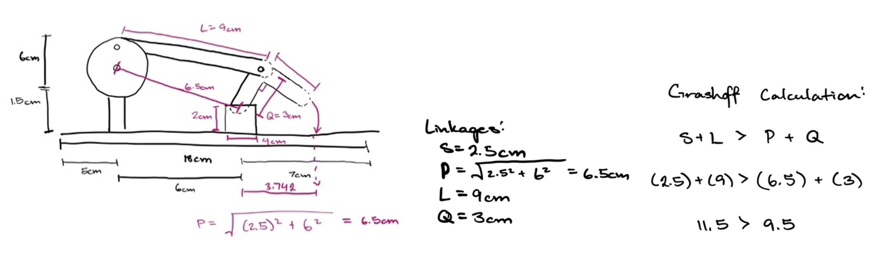
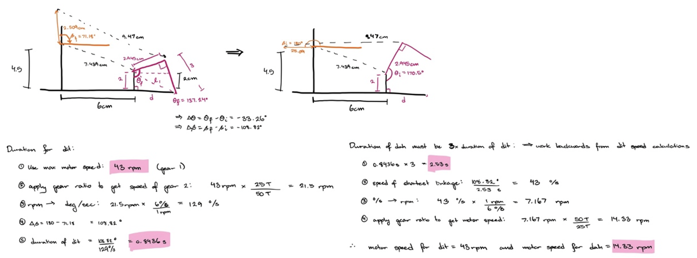
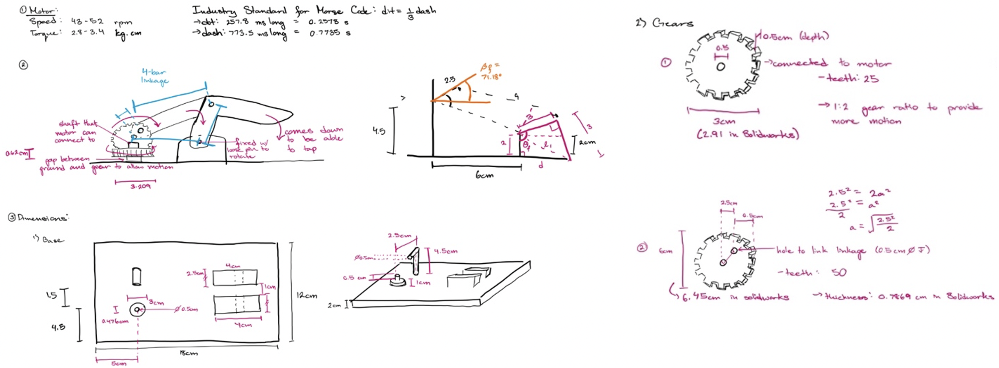
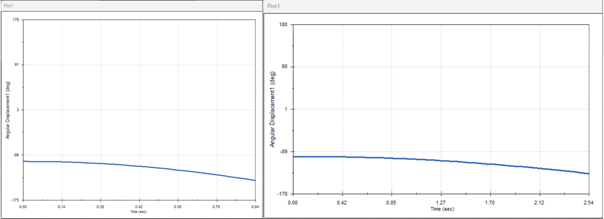
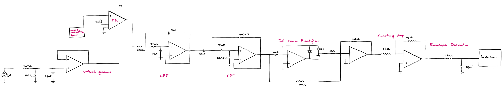
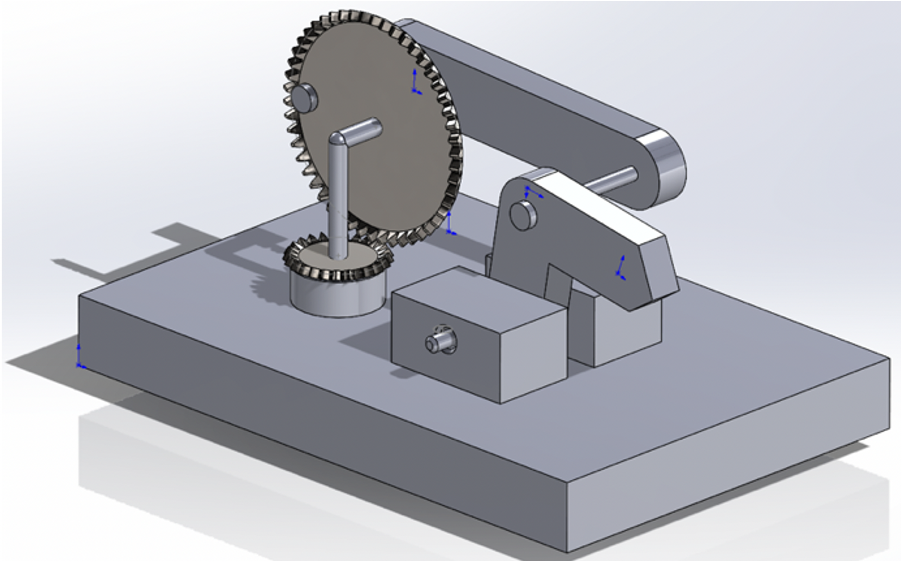
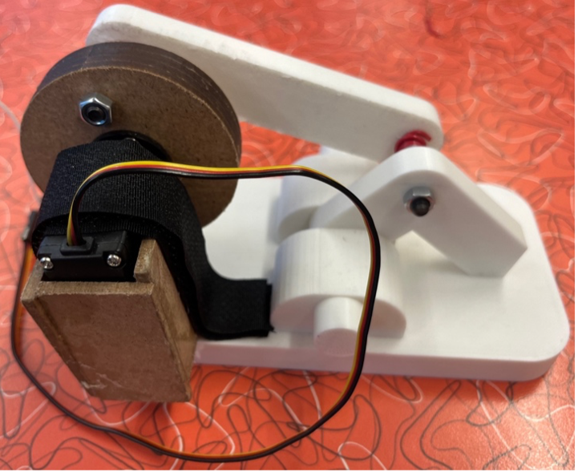
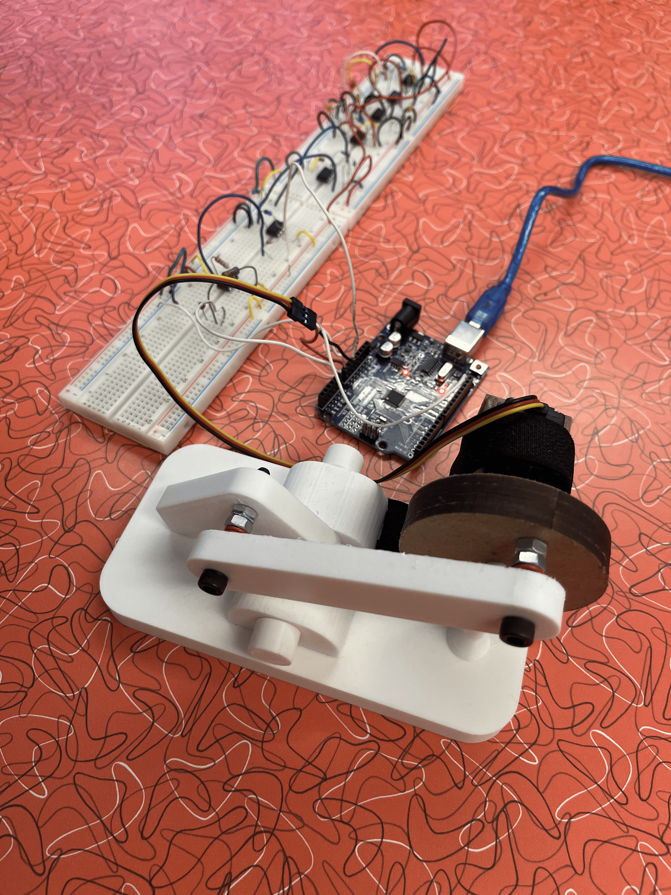

May 2024 - August 2024
Designed and fabricated a mechanism that can tap at two speeds dictated by the strength of a bicep contraction.
Designed, tested, and developed Arduino code and circuitry involving amplifiers, second-order filters, and a rectifier to translate electromyography (EMG) signals from bicep contractions to the Arduino Uno, controlling the motor speed on the device.
The Arduino IDE code compares the magnitude of the rectified and amplified EMG signal to pre-determined threshold values to set the motor as one of three motor speeds: stationary (Morse "space"), slow (Morse "dah"), and fast (Morse "dit").







